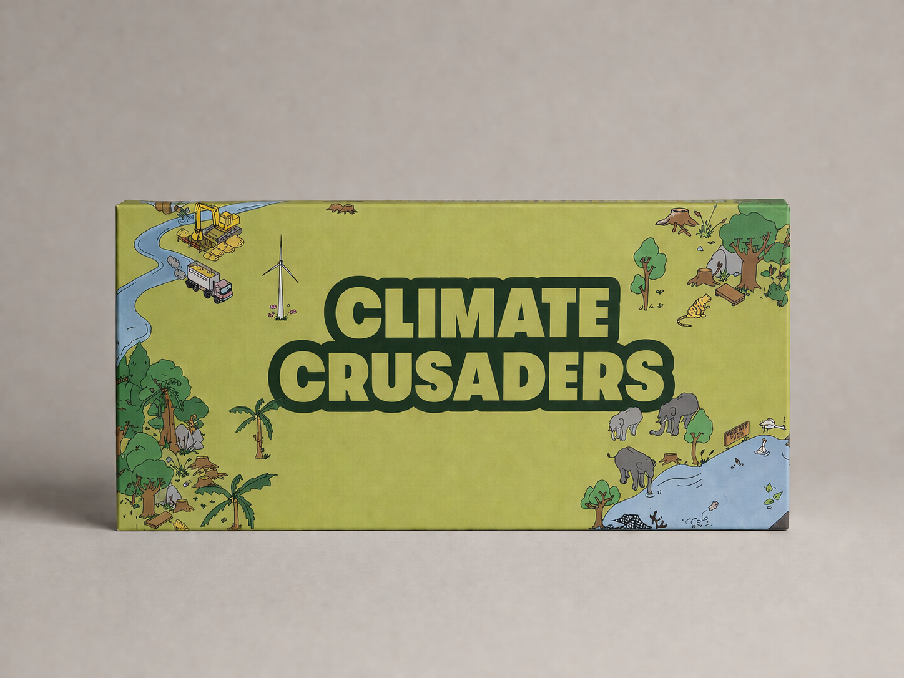

Stage 01
Climate Crusaders
Players engage with large illustrated landscapes inspired by visual discovery. They search for clues, solve word puzzles, and identify climate phenomena hidden in everyday settings — building vocabulary through recognition and naming.

Stage 01
Climate Quest
Players match images, concepts, causes, and outcomes — understanding how specific actions lead to specific environmental consequences. Vocabulary becomes analytical capacity through cause-and-effect card play.
Water literacy
Amrit Jal
Players identify water problems and best practices within an illustrated village landscape — recognising groundwater depletion, wasteful behaviour, damaged commons, and missing institutional coordination as part of their own environment.